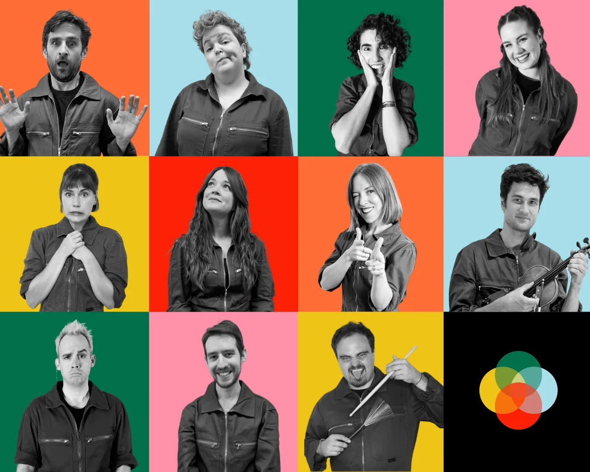
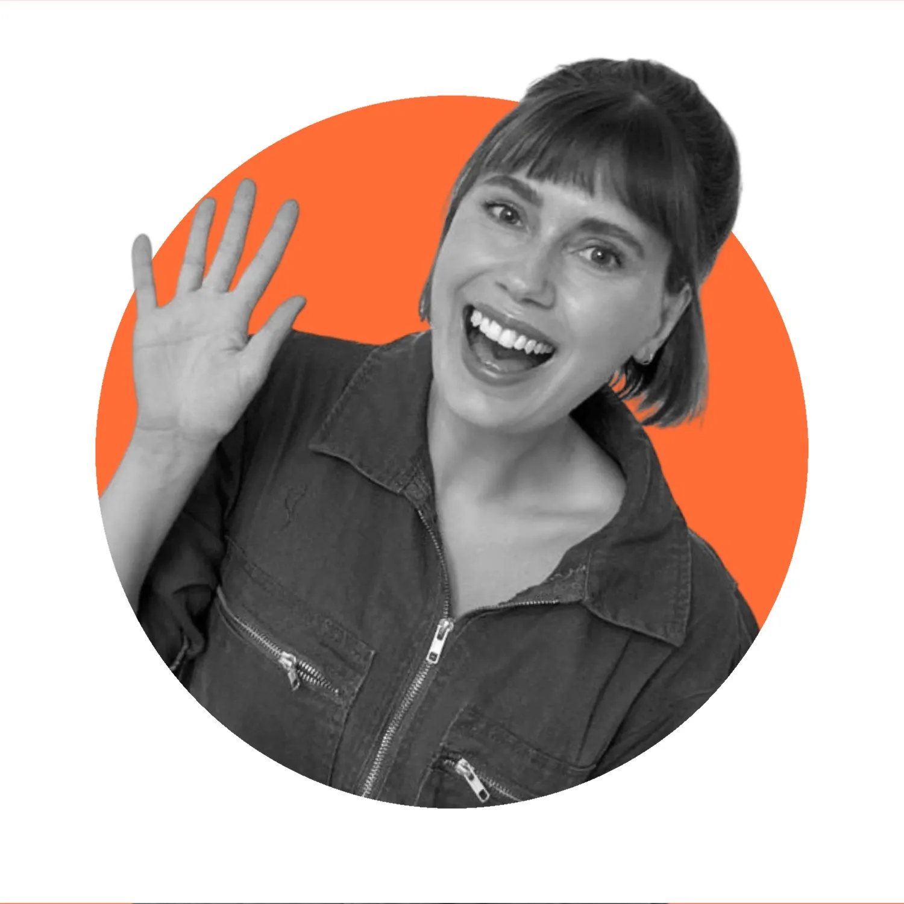
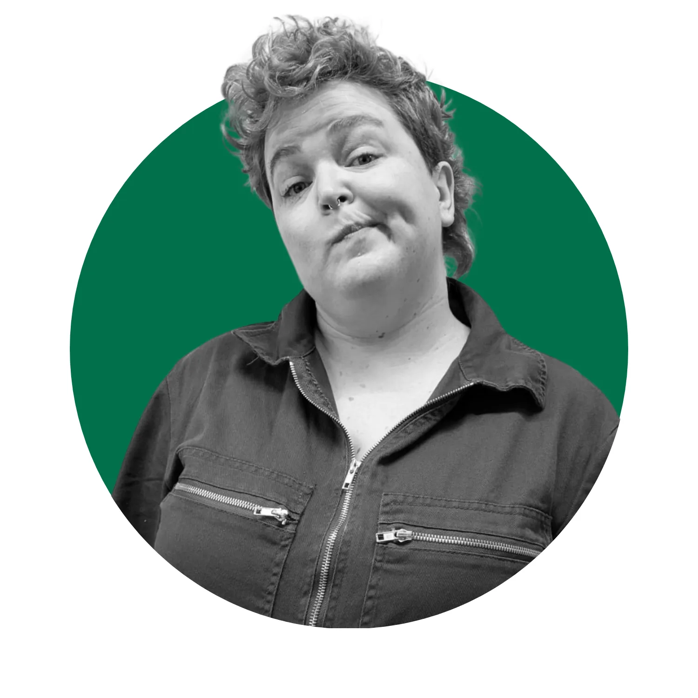
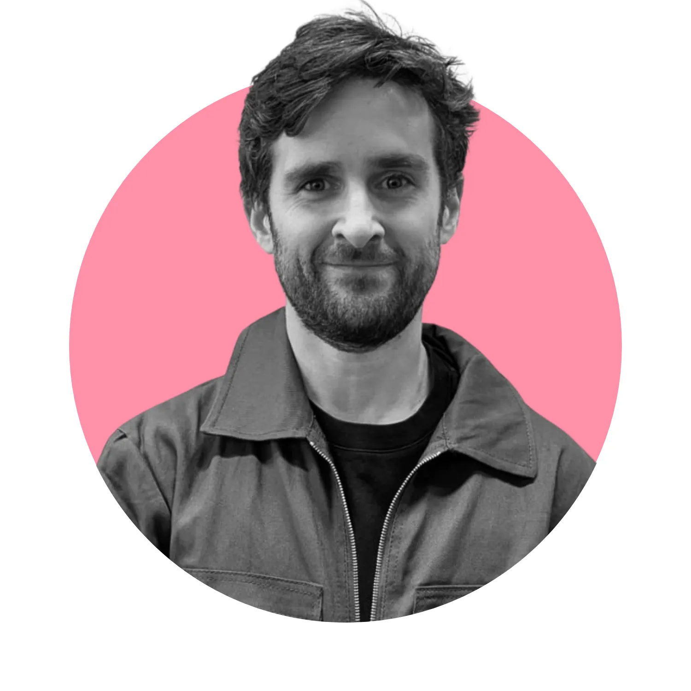
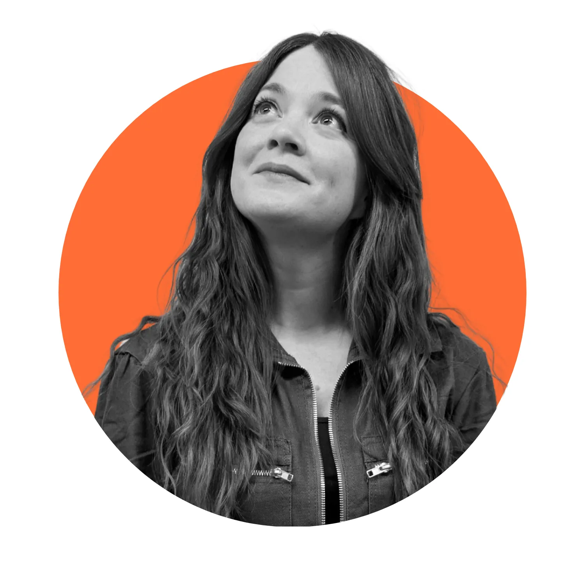
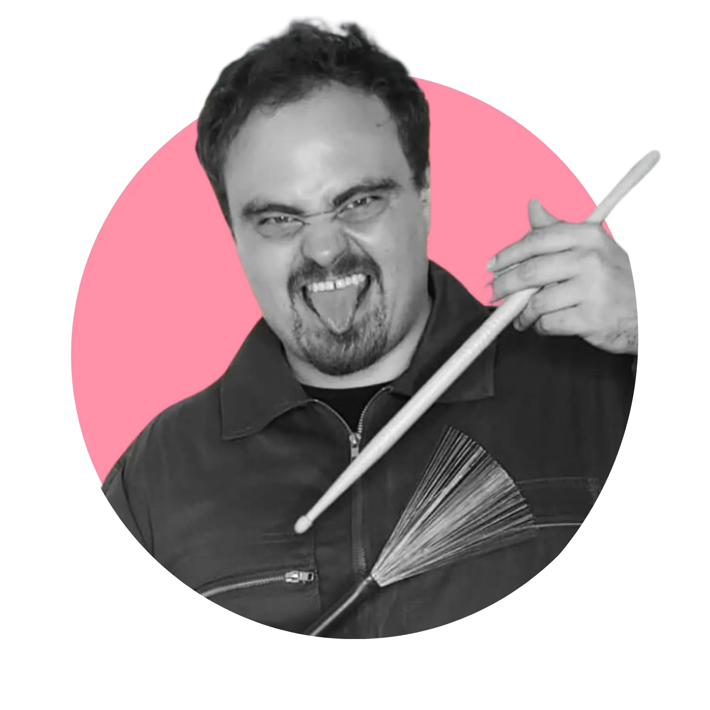
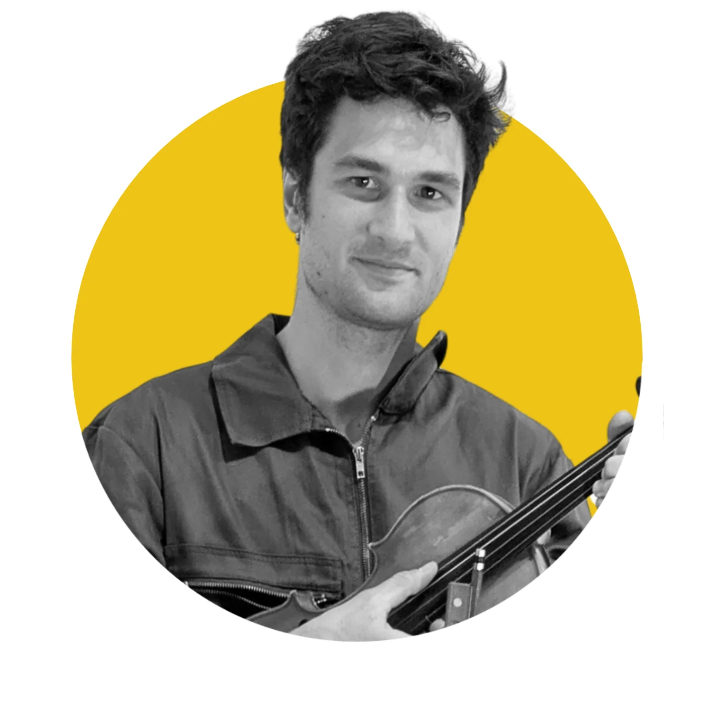
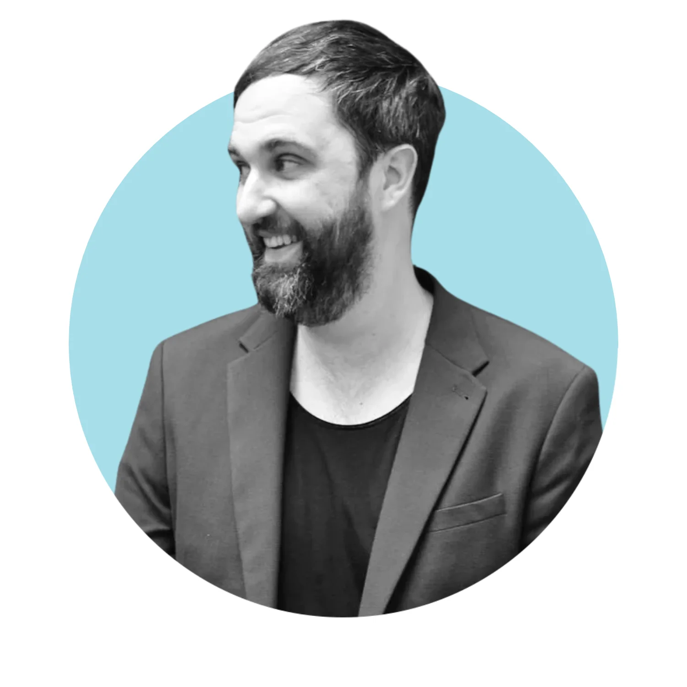

Hold onto your jumpsuits! Since bursting onto the Berlin independent theater scene in 2022, Kaleidoscope has established itself as a distinctive voice in contemporary musical theater, thrilling and delighting audiences with their signature blend of musical virtuosity and razor-sharp comedic storytelling. In their flagship show, this powerhouse ensemble weaves a two-act, completely unscripted musical out of thin air, based entirely on the audience's suggestions...a feat of magical theatre-making that the UK Theatre Review called “riotous joy.”
Kaleidoscope's performance credits include:

Catch our next fully improvised performance.
Fetching performance dates...

Michelle began her artistic career in musical theatre and opera in Melbourne at just 17, playing Jenny Lind in the musical Barnum. Since then, she has performed with Opera Australia, Victorian Opera, Gertrude Opera, Chunky Move, and the Royal Melbourne Philharmonic. Currently, she is nurturing her love of musical theatre and improv with Kaleidoscope while enjoying a more relaxed Berliner lifestyle. Alongside her artistic work, she is a leadership trainer and consultant who enjoys sneaking improv into unsuspecting rooms full of suits.
Tina Marie is a Luso-American performer originally from New Jersey. Alongside Kaleidoscope, she improvises with Tales Held Dear and BRACE! BRACE! (Comedy Cafe Berlin). Her scripted work includes voiceover (Burga, Deutsche Welle, Bayer, Ableton, Haba, Paradox Interactive, 4-H of America), theater (A Midsummer Night’s Dream, Henry IV), and musicals, including Urinetown (Little Sally) and A Chorus Line (Diana). She is the host of the upcoming podcast The Dead Children’s Book Club and teaches musical improv at ImprovWorks Berlin.

Taylor is an improviser, vocalist, and rad weirdo who joined Kaleidoscope in 2025. As for scripted work, Taylor originated the roles of both a trysexual bird in Mother Knows Best by Andrew Underberg (Hazbin Hotel), and — spoilers — an alien invader in Mallsical! (Musical Forum). Their single “Tip it Back” has been featured by TV’s The Fosters and The Chicago Code. Eternal thanks to teachers Joel Parnis and David Cassel. Free Palestine.

Jason is an improvisor and musician who hails from a tiny island off the south coast of the UK. He moved around a bit and ended up in Berlin in 2021. He joined Kaleidoscope in 2025; he also performs regularly at Comedy Cafe Berlin in the house team Capiche, as well as indie team HUMAN NIGHTMARE. Jason performs occasional scripted musicals too including Urinetown (Tiny Tom) and Joe in Encore Musicals’ upcoming 9 to 5.
Originally from Chicago, Angie Cornwell is a Berlin-based musical theatre actress, improviser, and teaching artist. A graduate of Illinois Wesleyan University with additional studies at University of Cambridge, Angie has had the privilege of performing across the United States, throughout Europe, and most recently at sea as a singer on a cruise ship. Angie is a founding member of Kaleidoscope and feels so privileged to create stories on stage with the people she loves.
has been improvising since 1994 when she debuted her singing career in front of her grandma's fireplace. She hasn't stopped singing since and has played leading roles in Little Women, Urinetown, and Pippin in theaters around the USA. Having trained at Second City and Indiana University, she is proud of her US Midwest roots. She now lives in Berlin with her dog, Willow, who is the best girl ever, and husband, Nick, who is the best man ever, and yes... Katie Love is her real name.

is a true Louisiana girl at heart, spent a little time in Texas before finding her way to Berlin. With a background from the Institution Theater in Austin and the Comedy Cafe Berlin, she’s been making audiences laugh since 2015. After hitting pause to welcome her sweet daughter into the world, Jenna’s back on stage and ready to dazzle with a mix of southern sass, sharp wit, and a whole lotta charm. Hold onto your hats, y’all—this mama brings the drama!
is an accomplished performer who regularly brings their talent as an accompanist to the musical improv scene in Berlin. They first discovered musical improv in NYC while helping a friend clean their apartment (“just play some chords and I’ll sing”), and immediately fell in love with that magical feeling only musical improv can bring. When not playing with Kaleidoscope, you can find Joseph living out their love of music through performing and teaching private music here in Berlin.
Paolo grew up in sunny Puglia, Italy and moved to Berlin in 2024. He’s driven by a passion for music and technology (whether on a computer or a piano, he's always pressing keys!). He started studying classical piano at the age of 5 and after university began delving into jazz piano. During COVID, he discovered the magic of musical theater, which caused many, many trips to London to see shows and an involvement in the Berlin MT scene, playing in the band for Urinetown (Bass on keys) and The Guy Who Didn’t Like Musicals (Keyboard 2).

is a half-Colombian, half-Norwegian actor, comedian, and musician who relocated to Berlin to further fuel his creative passions. A student of acting at the Actor's Studio Berlin, Juan is also a self-taught drummer who has been playing since he was 18, performing with various bands across different genres. He joined Scratch Theater in 2016, where he dove head-first into improv, and has since explored stand-up comedy and clowning workshops. Now with Kaleidoscope, Juan is excited to blend his dual loves of acting and music.

Axel is a multi-instrumentalist who grew up in Paris but fell in love with Berlin when he came on an exchange semester. In order to stay, this half-Argentine, half-Norwegian performer invented his own job: he now gives walking tours with live music. Axel joined the Kaleido-band in 2026, bringing true musical versatility; you can catch him regularly swapping between the violin, guitar, and keys in shows, and occasionally even adding supporting vocals. He also plays with his Beatles Tribute band Big Tom around the city.
